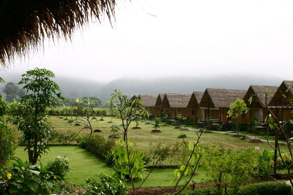

 |
| อันดับ 3 : ปาย เมืองหุบเขาแห่งสามหมอก
อำเภอ ปาย จังหวัดแม่ฮ่องสอน เป็นอำเภอเล็ก ๆ ที่ตั้งอยู่กลางหุบเขา ซึ่งในช่วง 10 ปีที่ผ่านมา อ.ปาย มีชื่อเสียงมาอย่างต่อเนื่อง สำหรับจุดน่าสนใจของ อ.ปาย นั้นก็อยู่ที่ธรรมชาติอันบริสุทธิ์ อากาศที่เย็นสบาย ความสงบของชุมชน และวิถีชีวิตที่เรียบง่ายไม่รีบร้อน ซึ่งมีทั้งชาวไทยใหญ่ และชาวไทยภูเขาอาศัยอยู่เป็นจำนวนมาก สำหรับผู้ที่มาเที่ยวเมืองปาย สามารถเช่ารถจักรยาน หรือรถมอเตอร์ไซค์ขี่เที่ยวรอบเมืองได้ โดยแหล่งท่องเที่ยวในบริเวณนั้นคือ บ่อน้ำพุร้อนท่าปาย ที่มีอุณหภูมิสูงถึง 80 องศาเซลเซียส หรือจะไปสักการะ เจดีย์พระธาตุแม่เย็น ที่วัดแม่เย็น แล้วแวะชมทิวทัศน์ของเมืองปายจากบนนี้ก็ได้ |